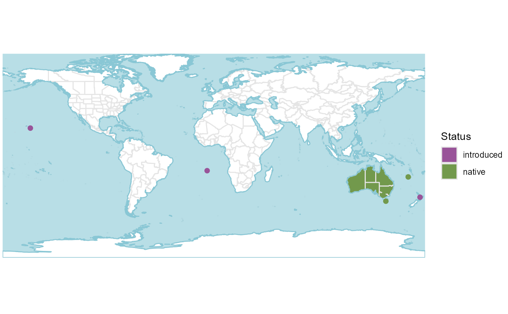

R/get_distribution.R
get_distribution.RdGenerate spatial distribution objects for species, genera or families
get_distribution(
taxon,
rank = c("species", "genus", "family", "order", "higher"),
native = TRUE,
introduced = TRUE,
extinct = TRUE,
location_doubtful = TRUE,
wcvp_names = NULL,
wcvp_distributions = NULL
)Character. The taxon to be mapped.
Character. One of "species", "genus", "family", "order" or "higher", giving the rank of the value in taxon.
Logical. Include native range? Defaults to TRUE.
Logical. Include introduced range? Defaults to TRUE.
Logical. Include extinct range? Defaults to TRUE.
Logical. Include occurrences that are thought to be doubtful? Defaults to TRUE.
A data frame of taxonomic names from WCVP version 7 or later.
If NULL, names will be loaded from rWCVPdata::wcvp_names.
A data frame of distributions from WCVP version 7 or later.
If NULL, distributions will be loaded from rWCVPdata::wcvp_names.
sf data.frame containing the range polygon/s of the taxon.
Where rank is higher than species, the distribution of the whole group will be returned, not individual species within that group. This also applies when toggling options - for example, introduced occurrences will only be included if they are outside the native range, regardless of whether native=TRUE or native=FALSE. To plot extinctions, introductions or doubtful occurrences within the native range, the summary_table and generate_occurrence_matrix functions can be used.
r <- get_distribution("Callitris", rank="genus")
p <- plot_distribution(r)
p
